Sesiones Fotograficas
NEW BORN
Las sesiones new born consisten en fotografiar a tu bebé en sus primeros dias de vida, entre el dia 10 y 12 de nacido, puesto que el bebé aun mantiene la postura fetal que es ideal para realizar un reportaje lleno de ternura y muy especial
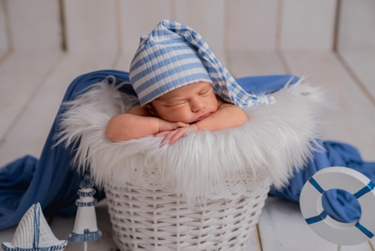
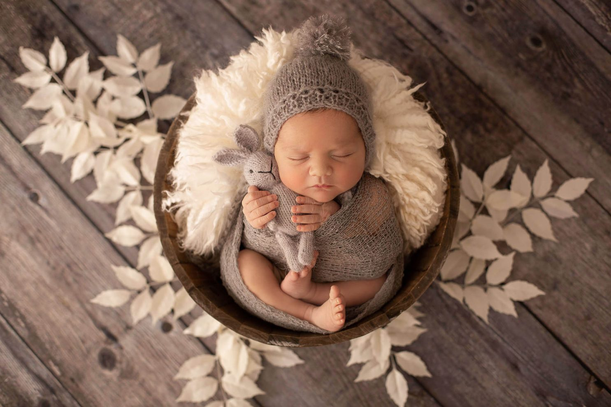
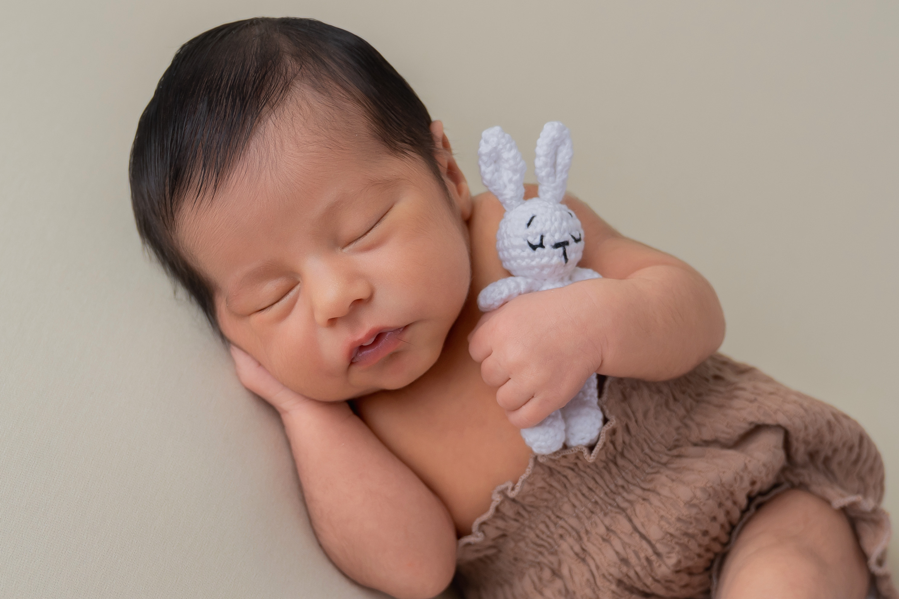
MES A MES
Reportaje que se realiza mes a mes durante el primer año de vida de tu bebé, esta sesion es ideal para guardar bonito recuerdo de su crecimiento, se pueden elegir tematicas
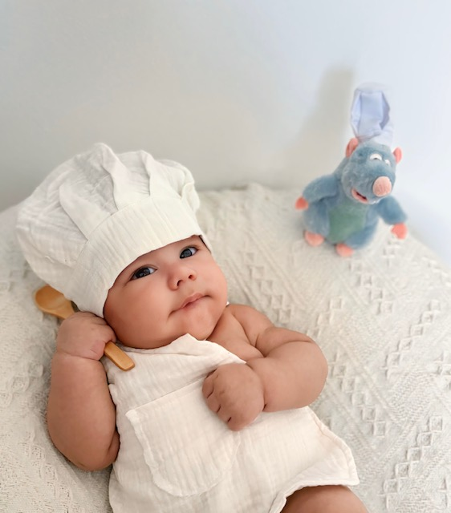
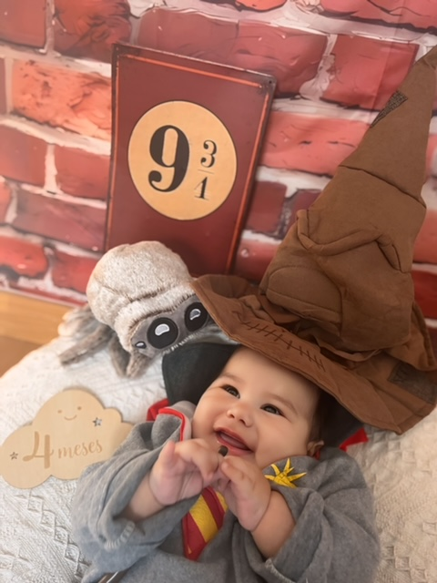
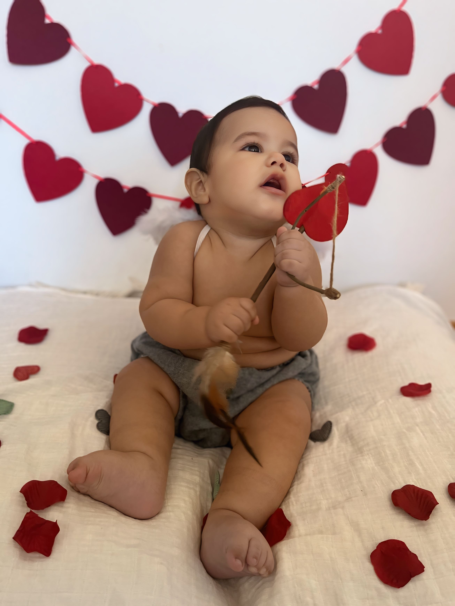
SMASH CAKE
Esta sesion fotografica captura momentos inolvidables de tu bebé en su primer cumpleaños, se suele realizar unos dias antes, incluye atrezo y smash cake
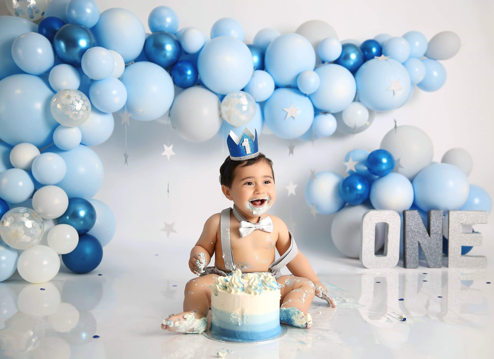
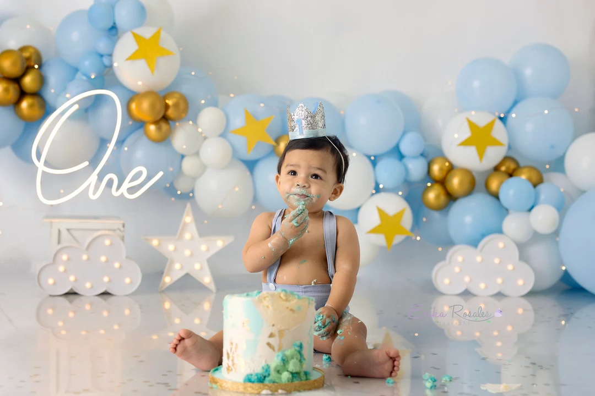
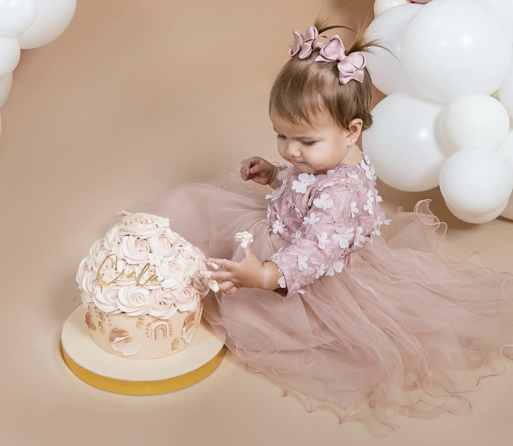
FAMILIAR
Sesion Familiar para bebé (no importa edad) y sus padres, posibilidad de incluir abuelos y/o hermanos
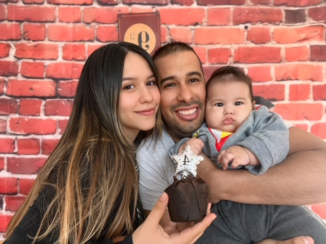
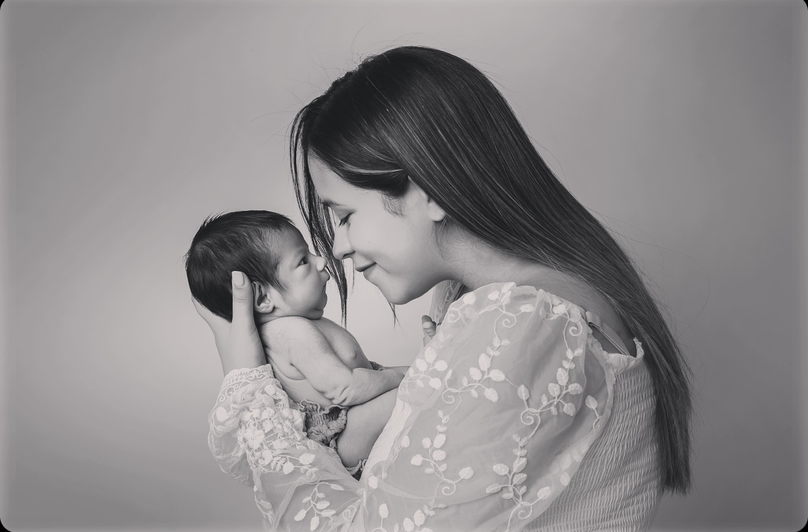
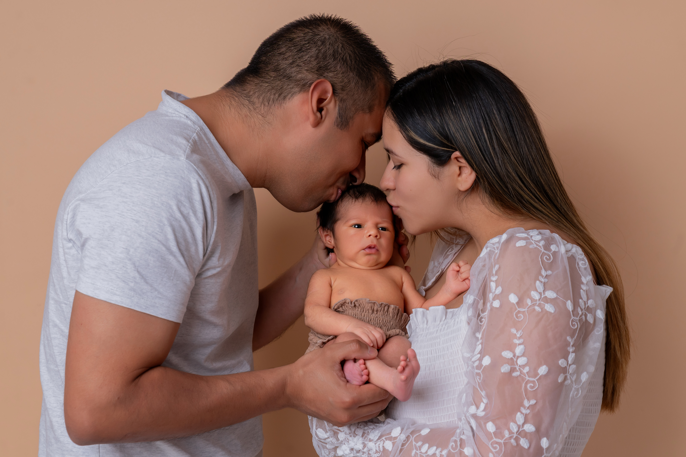
EMBARAZO
Con este reportaje para embarazadas guarda un recuerdo unico de un momento muy especial en la vida de una madre. Puede ser reportaje de interior o exterior se recomienda realizar durante la semana 34 de embarazo
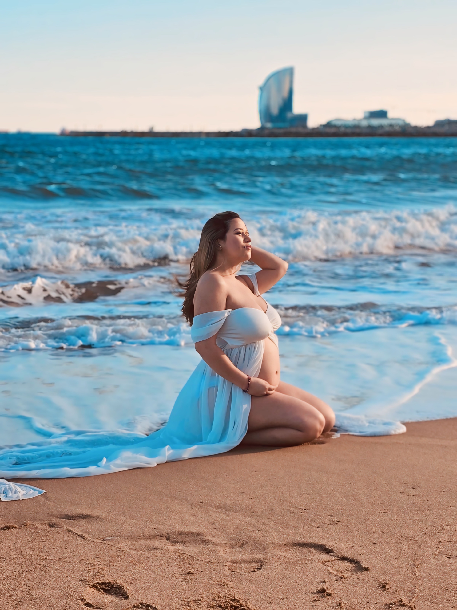
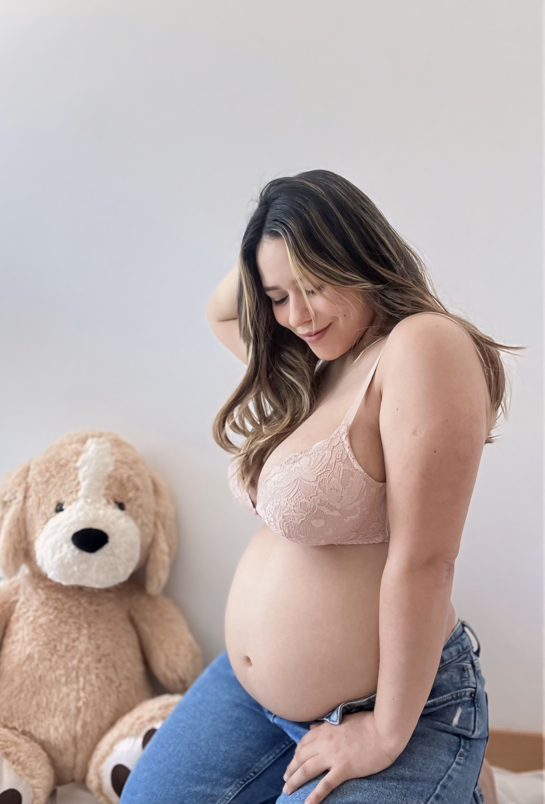